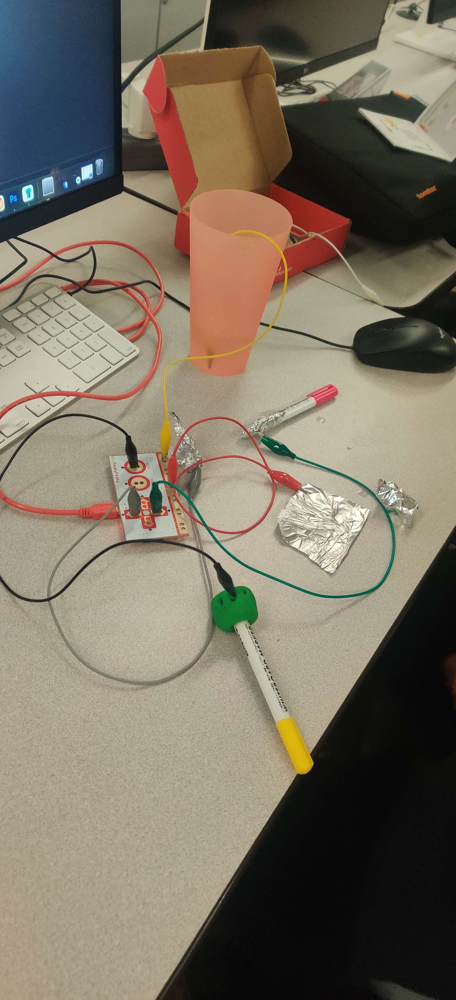
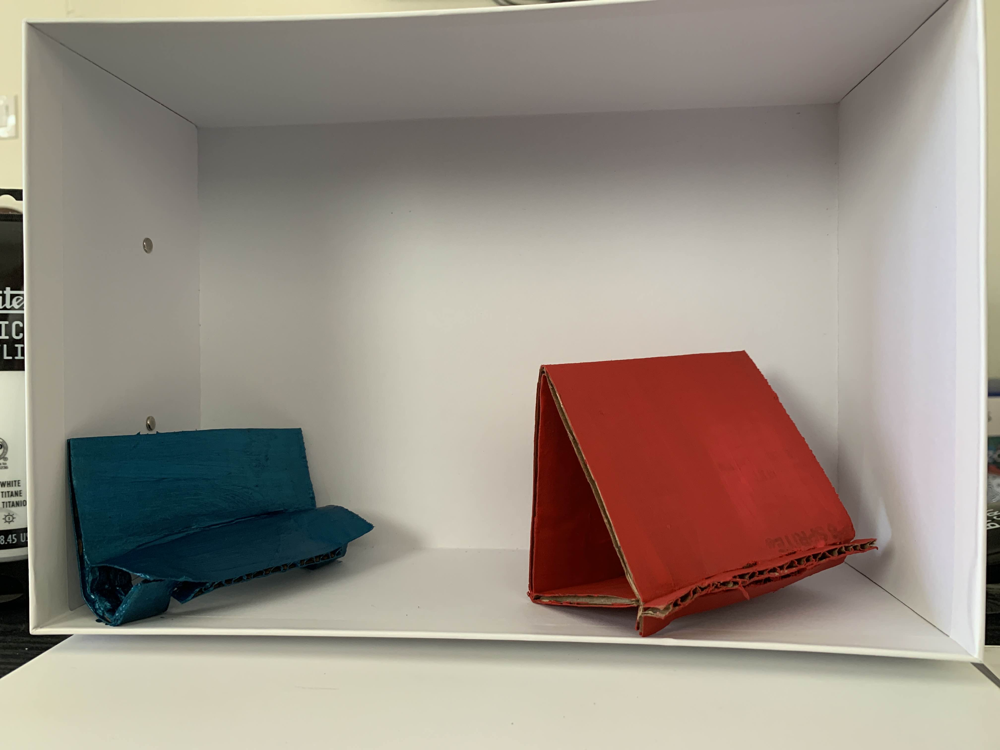
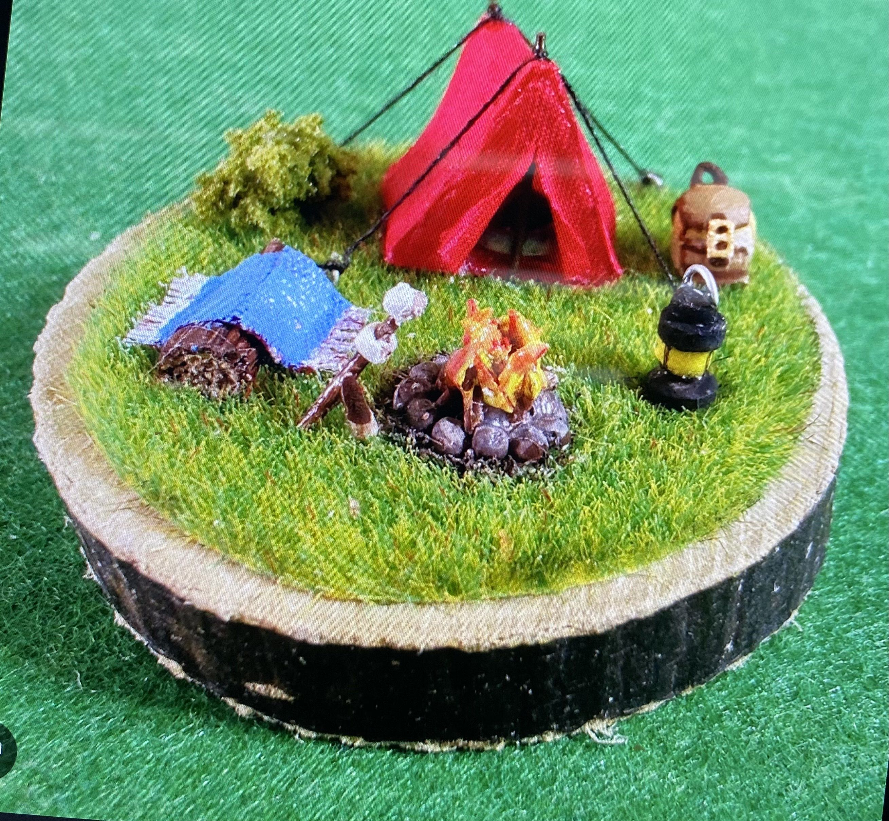
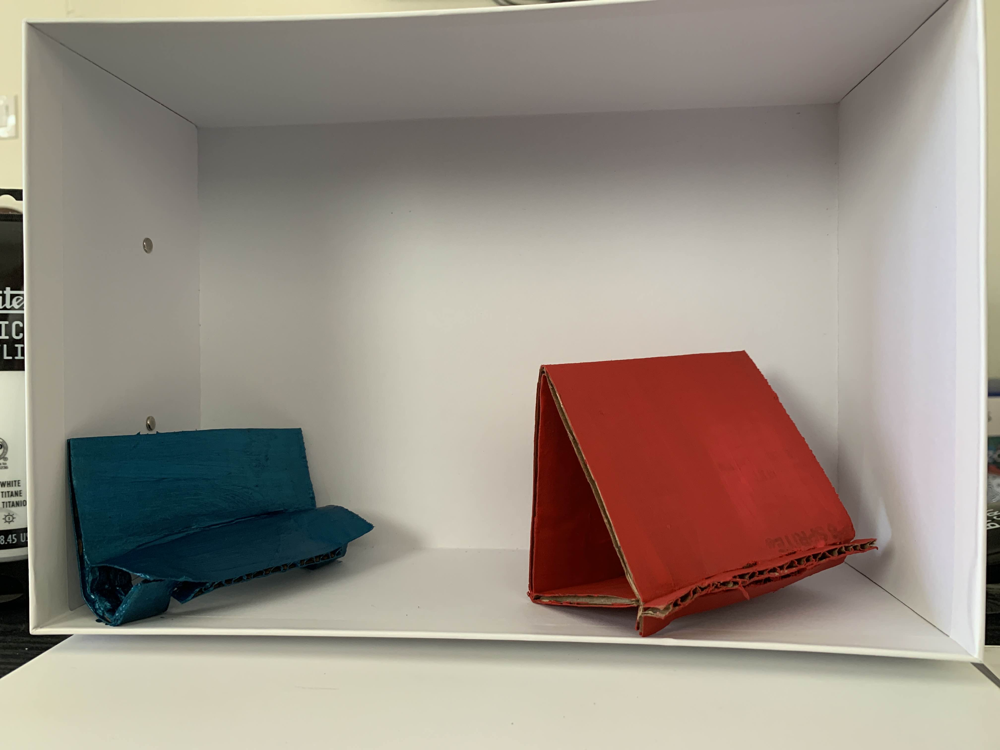
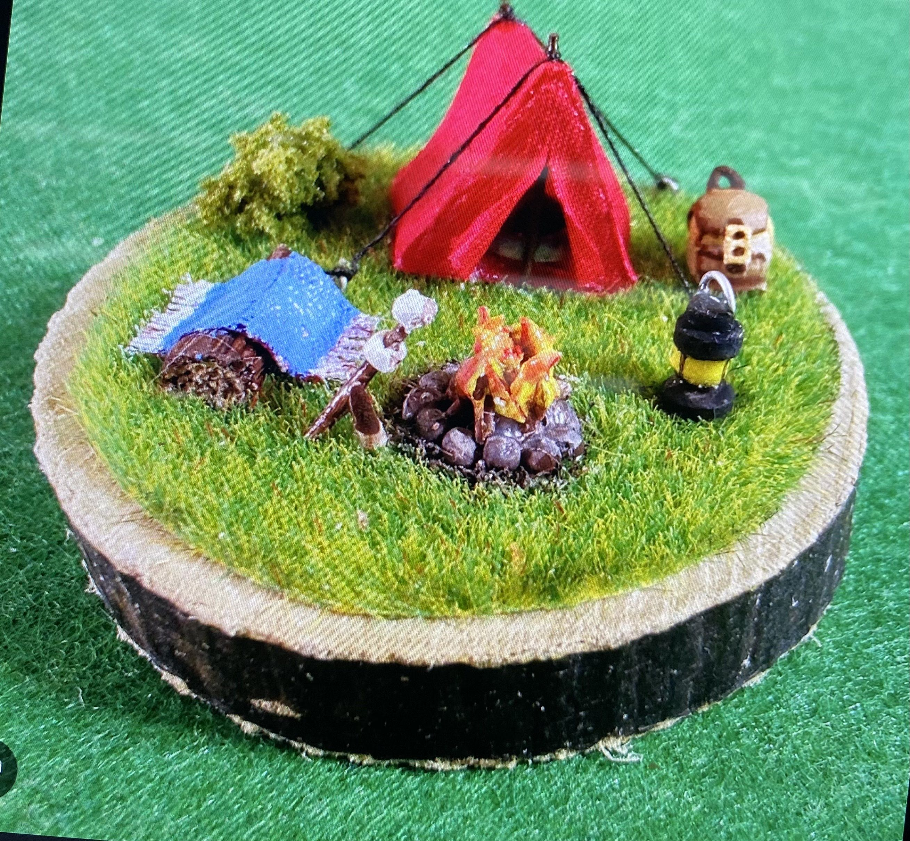
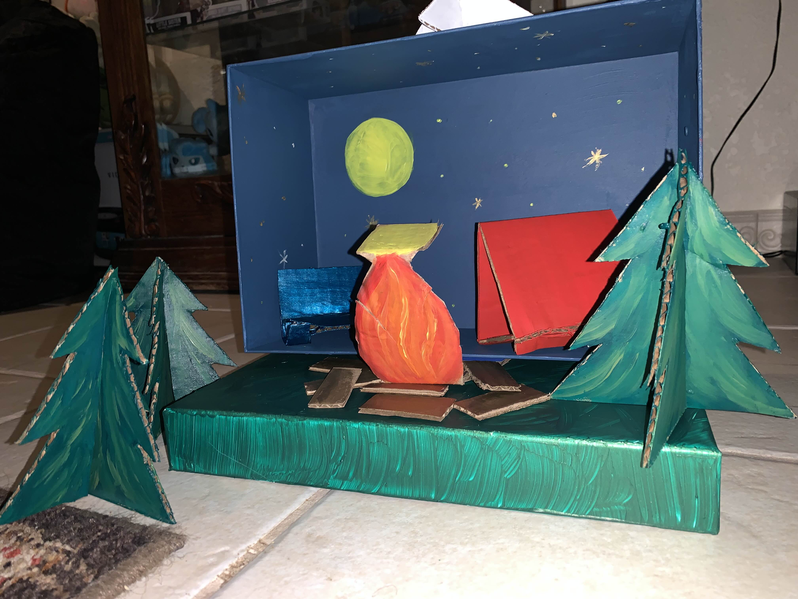

Our group was testing how the MakeyMakey works and we came up with using playdough and aluminum foil as our primary conductive source. Here is the first prototype of the marshmallow game!
Next we sketched out how the User Interface and Physical will look. Here are images in paper and out of cardboard
 



Finally We made all the Assets and completed the Physical Interface
